7 Memory Hierarchy & Caching
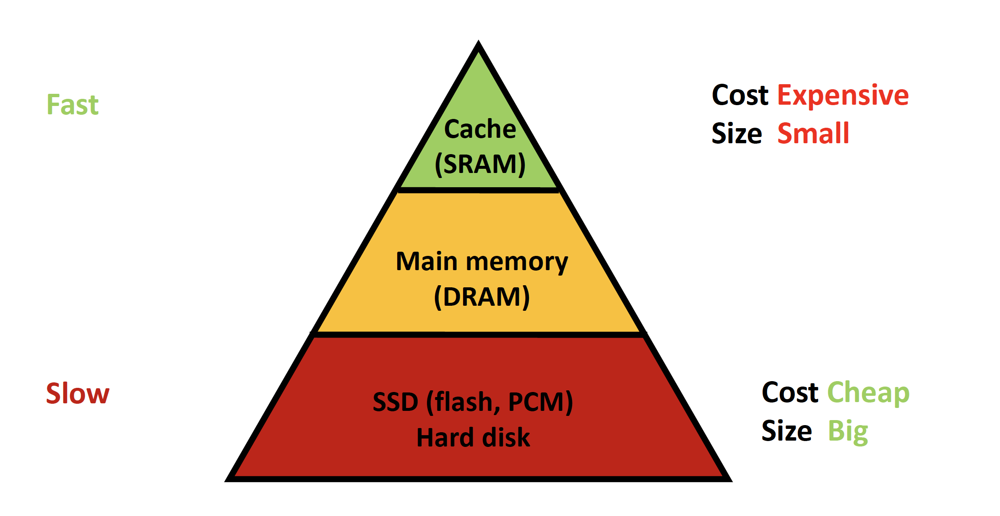
SRAM
Area: 6T per bit (used on-chip within processor) Speed: Typical Size: Cost: Volatile ()
DRAM
Disks
Flash
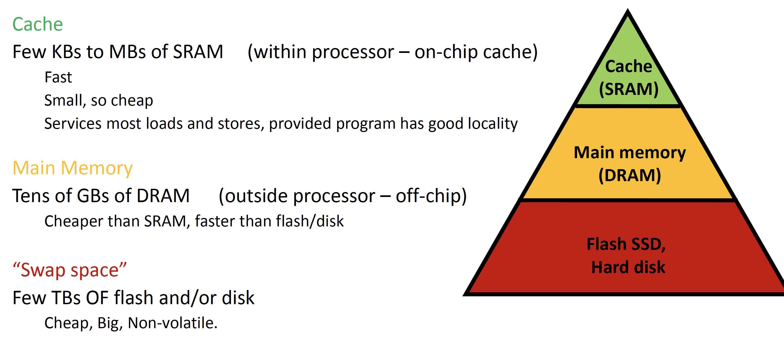
Virtual Memory provides an illusion that an ISA’s entire address space is available (since cost of having all addresses be available in a 64 bit system is too high)
7.1 Cache Basics
Cache commonly refers to SRAM used on-chip within the processor. Used to store data that is most likely to be referenced by a program
Key cache performance metric: AMAT - Average Memory Access Time
Cache consumes most of a CPU’s die area
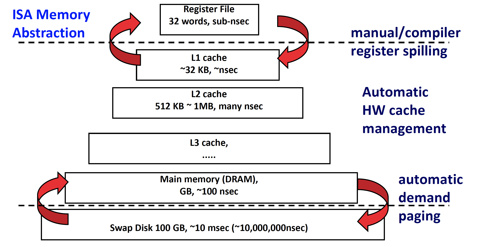
7.1.1 Basic Cache Design
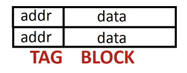
- TAG (CAM) holds the memory address
- BLOCK (SRAM) holds the memory data
Accessing the cache: compare reference address and tag
- Match? Get data from cache block -> Cache HIT
- No match? Get data from main memory -> Cache MISS
- This is implemented with CAMs to store tags
A cache consists of multiple tag/block pairs, each pair is a cache line
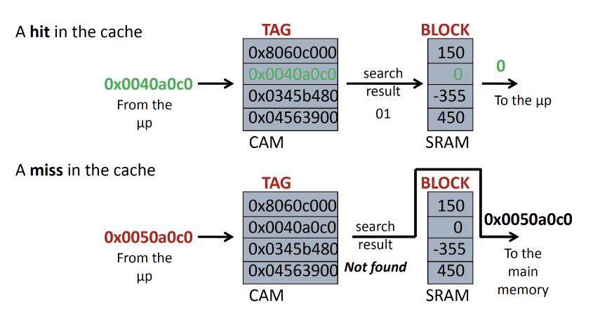
Cache Block refers to the data block
Cache Line refers to the entire line (including valid, tag array, data array)
7.1.1.1 Operations of a CAM
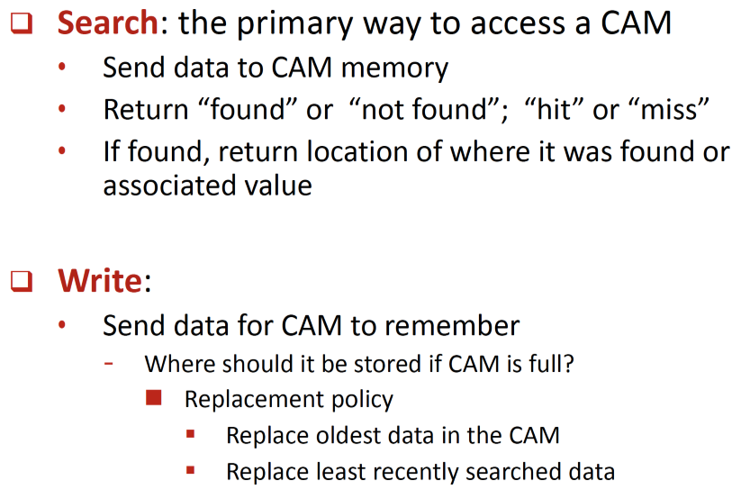
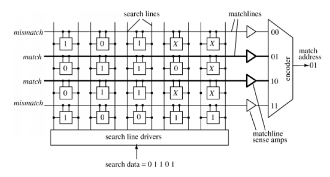
7.2 Cache Operation
On a cache miss, we fetch data from main memory and allocate a cache line and store the fetched data in it
Different policies exist to pick the victim of data replacement
We mainly exploit two localities:
- Temporal Locality
- More recently accessed memory locations are more likely to be re-accessed than other locations
- Data in least recently referenced (or Least Recently Used LRU) cache line should be evicted to make room
- Spatial Locality
- Memory addresses close to gether are more likely to be accessed than far apart addresses
7.2.1 AMAT
AMAT = cache latency \(\times\) hit rate + memory latency \(\times\) miss rate
- Every memory access goes through the cache
- Cache misses go through main memory
- *this eqn doesn’t include disk latency, thus changes if we include disk
To improve AMAT:
- Reduce latency of cache/main memory/disk AND/OR
- Increase hit rate of cache and main memory
7.2.2 Overheads
Cost of tags often drives the design of real caches, since these functionalities use significant area
Overheads: tag bits, valid bits, dirty bits, etc per cache line
7.3 Tracking LRU
Naive Method:
- Maintain LRU_rank per cache line
- Set LRU_rank of newly accessed block to 0, increment all others by 1
- Line with highest LRU_rank is victim on eviction
- Area overhead: log(# cache lines) per cache line
- However this is extremely slow and inefficient for hardware since it requires linearly modifying every cache line
LRU with least area overhead:
- We know that the number of permutations for N cache lines is \(n!\)
- Thus, we need \(log(n!)\) bits (in total) for N cache lines
7.3.1 Pseudo LRU
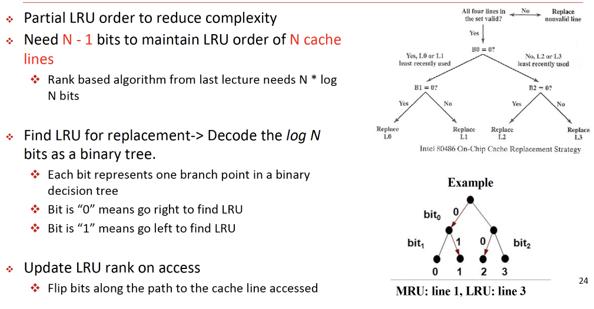
7.4 Cache Blocks
To reduce overhead of each cache line, we could also increase cache block size
Memory Address / Block Size = Tag (which is essentially a Block Address)
Block Offset = Address % Block Size
Block Size = \(2^{block\_offset}\)
sizeof(block_offset) = log2(block_size)
Tag size = address_size - block_offset_size
However, larger block size isn’t always better due to (slower access since larger data needs to be fetched, and wasteful fetches exceeding spatial locality)
7.4.1 Row vs Column Major
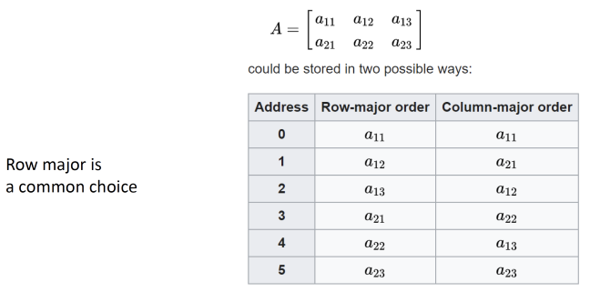
Row major is more common. Column major used for more GPU and HPC tasks. Row/Col major is important due to spatial locality in memory going through 2D/3D arrays.
7.5 Stores: Write-Through vs Write-Back
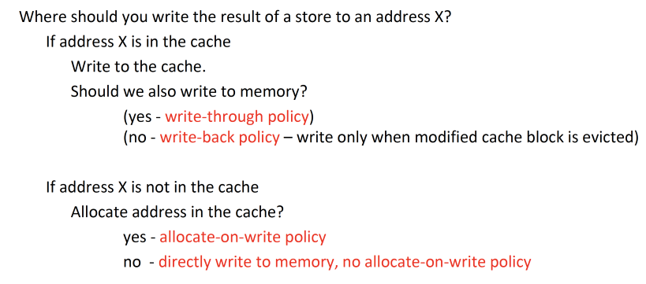
Cache does not write all stores to memory immediately - Keep track of most recent updated copy and only update main memory when data is evicted from the cache - Keep a dirty bit that tracks whether a cache line has been modified and needs to writeback to memory - Such that we don’t need to write back other unmodified lines to memory on eviction
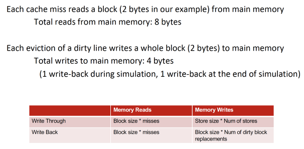
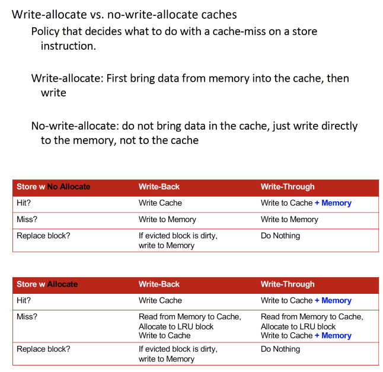
7.6 Cache Mapping
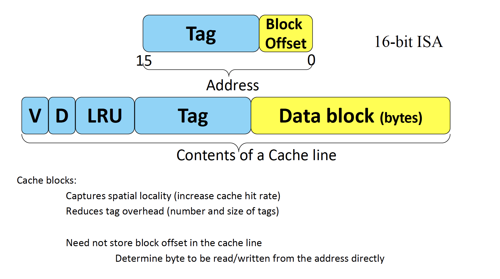
7.6.1 Fully-Associative Cache
- A memory location can go to any free cache line
- Check the tag of every cache line to determine match
- Slow due to parallel tag searches over entire cache
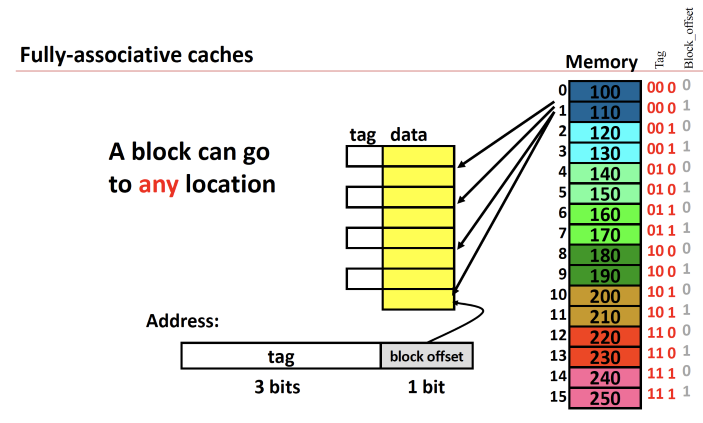
7.6.2 Direct Mapped Cache
- Directly map blocks of memory to one single location it can be held in
- Partition memory into as many regions as there are cache lines
- Each memory region maps to a single cache line in which data can be placed
- Eliminates requirement for parallel tag lookups
- Only need to check a single tag - the one associated with the region the reference is located in
- Associativity is 1
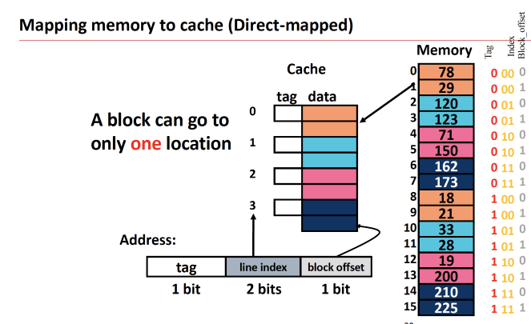
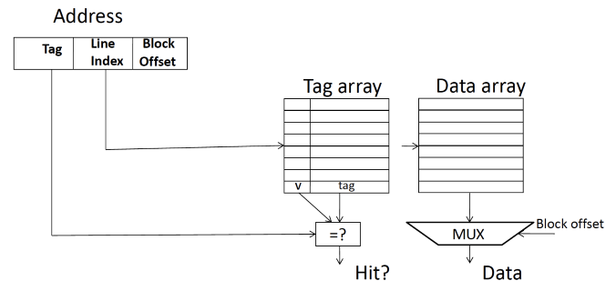
7.6.3 Set-Associative Cache
- Partition memory into regions but with fewer partitions than direct mapped
- Associate a region to a set of cache lines
- Check tags for all lines in a set to determine a HIT
- Treat each line in a set like a small fully associative cache
- LRU (or LRU-like policy generally used)
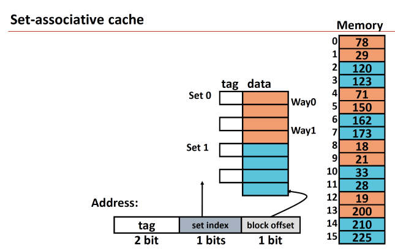
- Ways are the blocks within a set
- Each cache line within a set is a way
- E.g. if a set is 2-way associative, it has 2 cache lines within a set
- i.e. it has to perform 2 tag comparisons per access
- E.g. if a set is 2-way associative, it has 2 cache lines within a set
- Sets are essentially the number of partitions you split your entire cache into smaller fully-associative “sub” caches
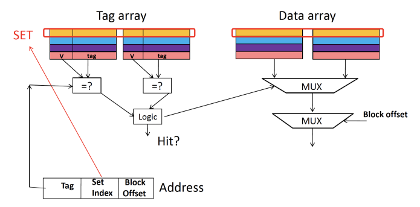
7.6.4 Cache Associativity Summary
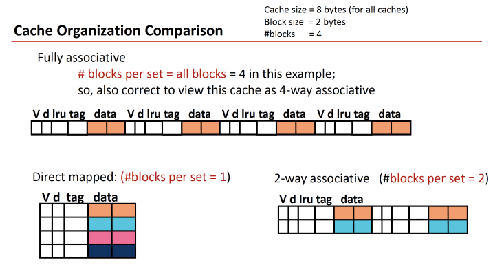
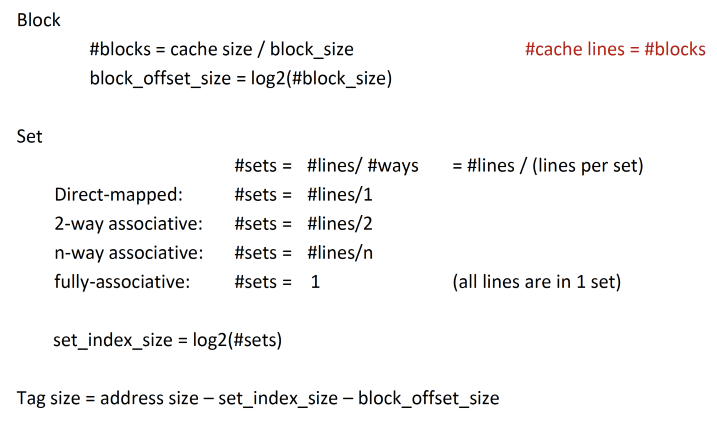
7.7 Cache Misses
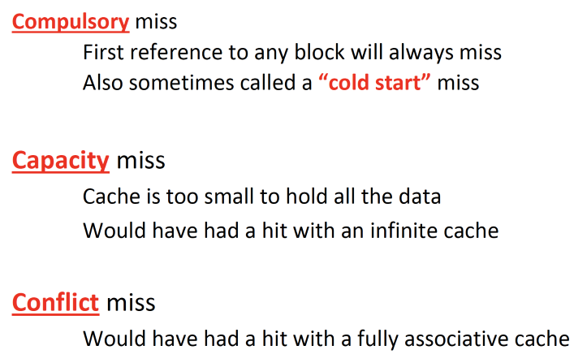
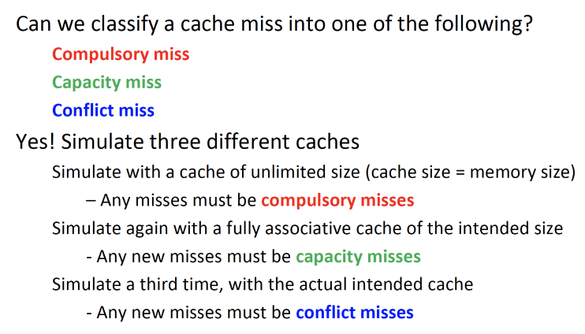
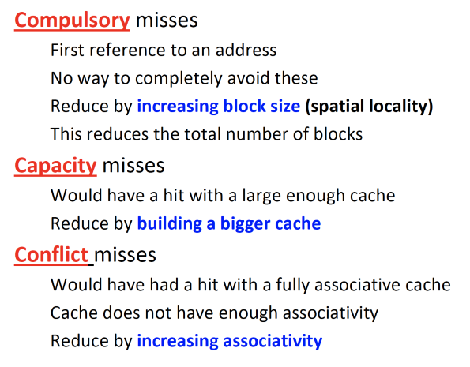
7.7.1 Cache Parameters
Key parameters affecting miss rate:
- Cache Size
- Block Size
- Associativity
- Replacement Policy
7.7.1.1 Cache Size
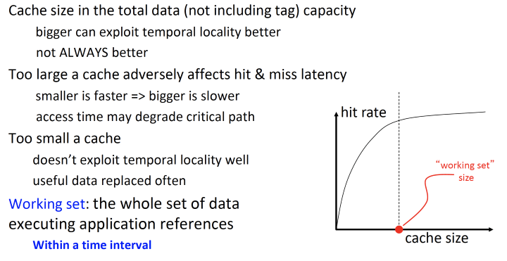
7.7.1.2 Block / Line Size
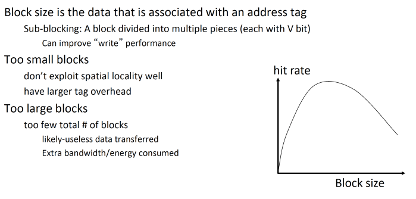
7.7.1.3 Associativity
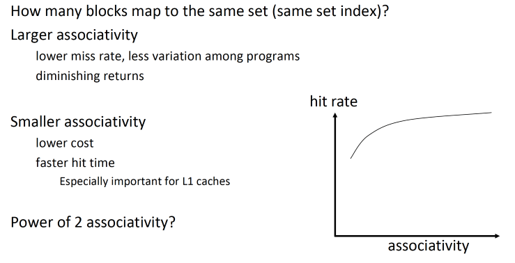
7.8 Cache Summary
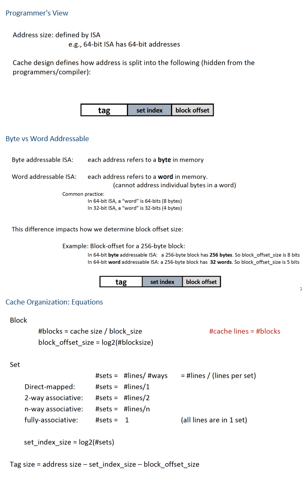
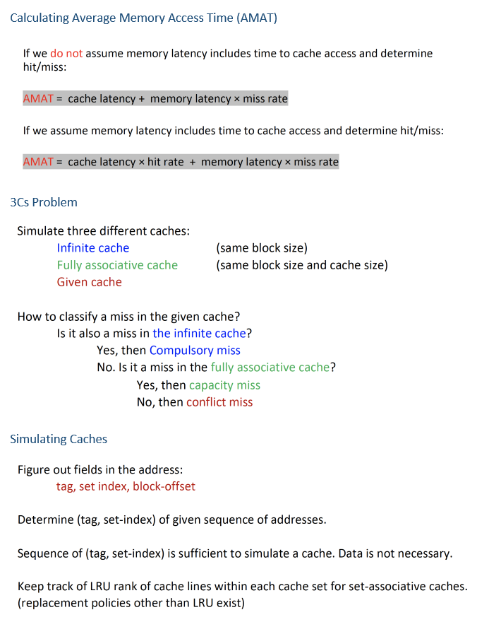
7.9 Examples
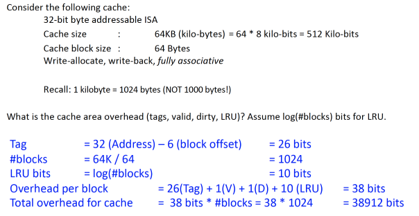